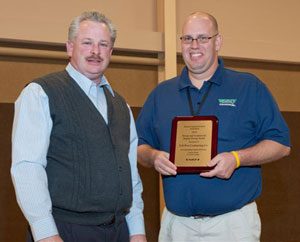

Awards
MAPA Honors West For Paving Project On Route 30
NB West Contracting received an excellence in paving award from the Missouri Asphalt Pavement Association (MAPA). The award was given for outstanding quality of paving work on a project on Route 30 in Jefferson County.
West Contracting completed the project for the Missouri Department of Transportation (MoDOT) last year. It consisted of widening, repairing and resurfacing approximately nine miles of Route 30.
West Contracting used a new paving technology for the first time in this area. A thin layer of Superpave asphalt was bonded to the existing concrete surface using a polymer modified emulsion and a “spray paver” machine. This “Bondtek” technology allows MoDOT to install thinner layers of asphalt over concrete surfaces. The polymers ensure a strong bond to the pavement that limits future repairs.
The award was presented at MAPA’s annual conference on Jan. 15, 2013. The award was one of three given at the conference attended by contractors from across the state.
Sullivan And Pacific Asphalt Plants Receive 2011 Diamond Quality Honors
The National Asphalt Pavement Association (NAPA) awarded its Diamond Quality Commendation to NB West Contracting Inc.'s asphalt plants in Sullivan and Pacific, MO. St. Louis-based NB West specializes in supplying asphalt, asphalt paving and concrete construction primarily for the state, cities, municipalities and new construction sites.
The commendation recognizes asphalt plants that provide a self-assessment based on practices focused on ensuring product quality. The areas evaluated include recycled asphalt pavement (RAP), aggregate handling, storage, drying and mixing, air quality, truck scales, silos and control rooms.
NAPA developed the program in 2009. It honors companies dedicated to responsible practices and continuous improvement. Both plants have received the commendation every year since NAPA began the program.
MAPA Presents Quality Award For Nova Chip Project
MoDOT Director Kevin Keith Presents Steve Jackson of N.B. West Contracting with the 2010 Missouri Asphalt Pavement Association (MAPA) Quality in Paving Award for Clayton Road in St. Louis County. The Clayton Road project utilized Nova Chip Ultra Thin Bonded Asphalt wearing course. It also was the first time in Missouri where a Nova Chip mix was produced using Evotherm warm-mix additive. N.B. West Contracting worked with its partner – St. Louis County Highway Department – to provide a quality pavement while advancing the technology of warm-mix asphalt. Please see our Go Green section of our Web site to learn how N.B. West is the innovation leader in utilizing warm-mix asphalt.
Sullivan Asphalt Plant Receives Commendation From NAPA
The National Asphalt Pavement Association (NAPA) recognized NB West Contracting Inc.’s asphalt plant in Sullivan, MO, with its 2010 Diamond Quality commendation. The commendation demonstrates a company’s dedication to continuous improvement and focus on product quality.
NAPA developed the program in 2009. The commendation recognizes asphalt plants that provide a self-assessment based on practices that ensure product quality. The areas evaluated include recycled asphalt pavement (RAP), aggregate handling, storage, drying and mixing, air quality, truck scales, silos and control rooms.
Pacific Asphalt Plant Receives Commendation From NAPA
The National Asphalt Pavement Association (NAPA) recognized NB West Contracting Inc.’s asphalt plant in Pacific, MO, with its 2010 Diamond Quality commendation. The commendation demonstrates a company’s dedication to continuous improvement and focus on product quality.
NAPA developed the program in 2009. The commendation recognizes asphalt plants that provide a self-assessment based on practices that ensure product quality. The areas evaluated include recycled asphalt pavement (RAP), aggregate handling, storage, drying and mixing, air quality, truck scales, silos and control rooms.
West Contracting Receives MAPA Award
The Missouri Asphalt Pavement Association (MAPA) presented its 2008 Quality Paving Award to West Contracting. The award recognizes West Contracting’s work on the First Continuous Flow Intersection completed in Missouri. It was completed in the Spring of 2008 at the Gravois Bluffs project at Route 30 and Summit Road in St. Louis County.